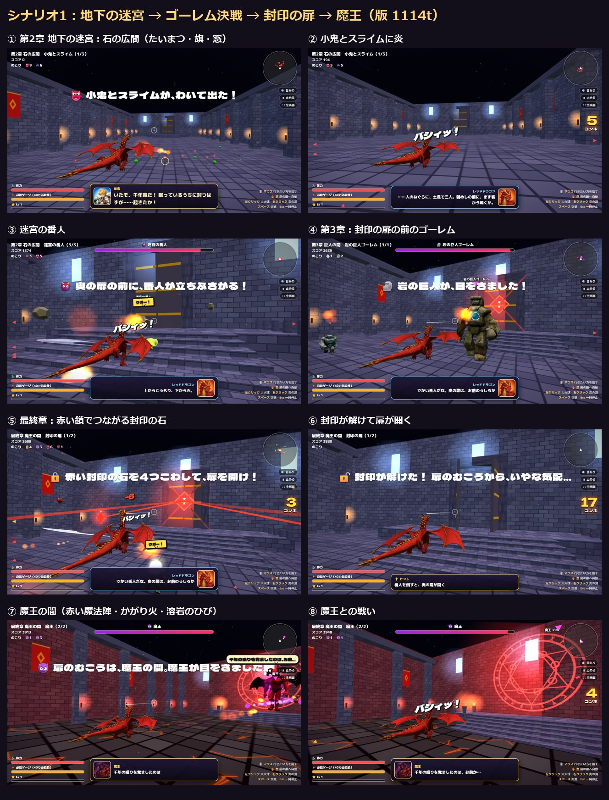
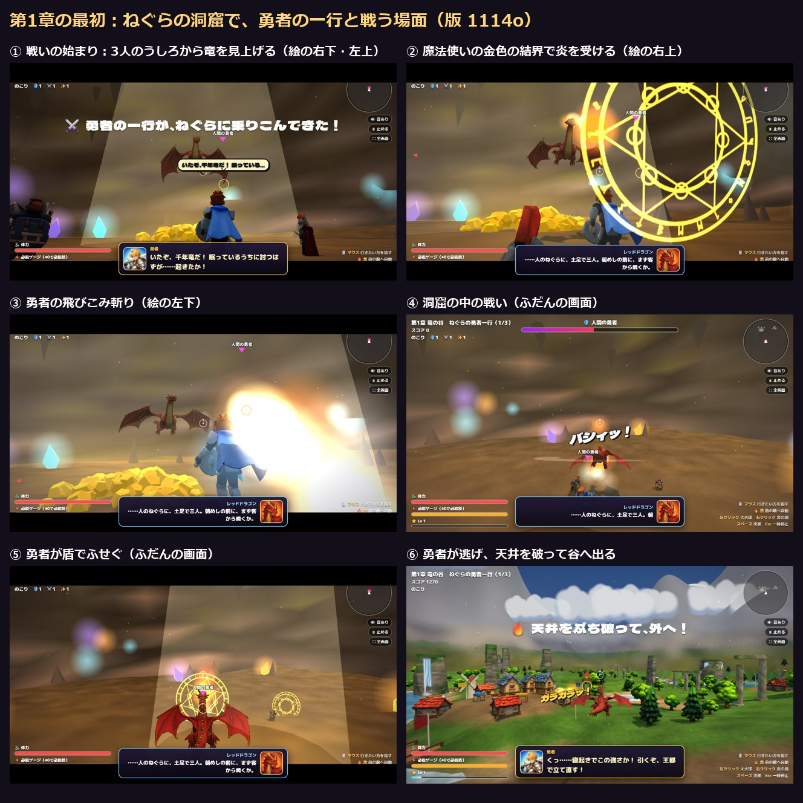
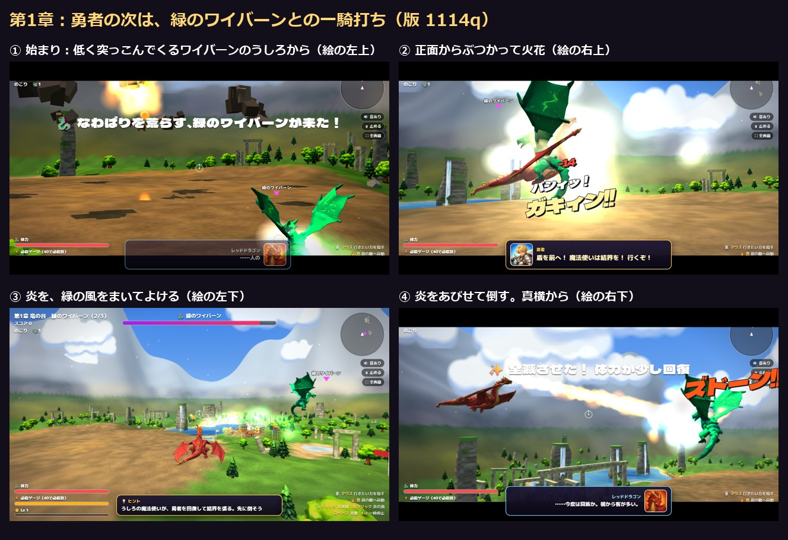

表紙の4コマ と ゲーム画面の見比べ
2026年11月14日 版 1114x
結論：カメラの向きに加えて、炎の色・兵の隊列・投石機・燃える城・四角い岩のゴーレムを入れ、表紙の絵にさらに近づけました。投石機とゴーレムは Tripo で新しく作りました。

シナリオ1：地下の迷宮 → ゴーレム決戦 → 封印の扉 → 魔王

勇者の一行 → ワイバーン → 地下の迷宮（小鬼・スライム・番人）→ 封印の扉の前のゴーレム → 封印の石を4つこわす → 魔王の間で魔王、で終わりです。
石の広間にたいまつ・赤い旗・青い窓・階段と扉を置きました。扉には赤い鎖のばつ印とかぎ穴の印が光ります。魔王の間は、赤い魔法陣・かがり火・溶岩のひびの床です。
広間の中では、カメラを低く寄せて、竜を左手前に大きく映します。
選択画面の「📖 シナリオ」のボタンで、シナリオ1（この流れ）とシナリオ2（今までの6章）を切りかえます。
第1章の最初：洞窟で勇者の一行と戦う場面（新しく足した）

青マントの勇者、赤マントの騎士、大きな背負い袋の魔法使いの3人です。いただいた絵と同じ3人のモデルを使いました。
竜がねぐらで目を覚ますと、3人が乗りこんできます。勇者は体力が3割になると逃げます。そのあと天井を破って谷へ出ます。
→ 例えば：魔法使いを先に倒すと、勇者の回復と結界が止まり、早く終わります。
始まりは3人のうしろから竜を見上げます。最初の結界と最初の飛びこみ斬りの時だけ、勇者の肩ごしに映します。
レッドドラゴン・ワイバーン・アースドラゴンの時だけ出ます。ほかのキャラは今までどおり谷から始まります。
勇者の次：緑のワイバーンとの一騎打ち（新しく足した）

勇者の一行が逃げて谷へ出ると、緑のワイバーンが土けむりを上げて低く突っこんできます。倒すと、次はオーガの親分です。
突進が当たると火花と「ガキィン!!」が出ます。こちらの炎が近づくと、緑の風をまいて横へよけます。倒す時は真横から映します。
→ 例えば：よけた直後の2秒ほどは次をよけられないので、続けて撃つと当たります。
竜の3キャラの時だけ出ます。ほかのキャラは、今までどおり魔物の群れから始まります。
表紙に合わせて直した3つの場面
技をためている間、カメラが竜の前の下に回ります。口から炎がふき出すのを見上げてから、いつもの向きにもどります。
→ 例えば：大火球を出すと、約1秒だけ竜の顔と広げた羽が大きく映ります。
敵の一団が出た時、まず敵軍を上から見せます。次に、竜の肩ごしに遠くの敵と城を望遠で見せます。
→ 例えば：王都の章では、城の前に並ぶ兵が見えてから、手前の竜と奥の城が1枚に入ります。
ボスと大きなゴーレムは、すぐ消えません。炎をあびて、ゆれて、岩を飛ばしながら崩れます。カメラは真横から、竜と敵の両方を映します。
→ 例えば：ゴーレムを倒すと、竜の口から敵まで炎の帯がのび、岩のかけらが飛びちります。
今回さらに近づけた所（Tripo で作った物を含む）
白く光っていた炎を、黄色からだいだい色に変えました。必殺技の口もとの光も小さくしました。
大きなゴーレムを、表紙と同じ「四角い岩を積んだ・胸と目が青く光る」形に差しかえました。大きさも1.35倍にしました。歩く・殴るの動きも付いています。
王都の野戦に、木の投石機を5台置きました。岩を投げてきます。
王都の城の前に、青い兵の隊列を約250人ぶん並べました。炎や爆発が近くに来ると、ふき飛びます。
→ 例えば：隊列のまん中へ大火球を落とすと、まとめて「うわあーっ！」と散ります。
空を飛ぶキャラの時、各章の空に金色の輪が8つ並びます。くぐると必殺ゲージと体力が少したまります。続けてくぐると点が上がります。
→ 例えば：ゲージが足りない時に輪を2つくぐると、必殺技1回ぶんに近いゲージがもどります。
王都の章が始まった時から、城の塔の屋根と本丸が燃え、黒い煙が上がります。その建物を壊すと火も消えます。
まだ表紙に届いていない所
・隊列の兵は、近くで見ると箱を重ねた形です。遠くから見る用の作りです。
・表紙の右上のような、滝にはさまれた深い谷は、ゲームにありません（滝のある岩の柱はあります）。
・必殺技は、夕方の章で太陽の方を向くと画面が白っぽくなります。
気づき
・見せ場は長くしていません。必殺技は約2秒、敵軍は約2秒、倒す場面は約1.5秒です。
・敵軍と倒す場面は、クリックかキーで早送りできます。
・必殺技のカメラは、続けて出す時（前の技から8秒以内）は動きません。単発の時だけ、ゆっくり回りこみます。